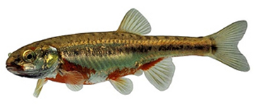
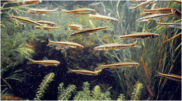

En aquesta zona, on desemboca un rierol a l’estany, és fàcil observar, i fins i tot capturar, algun especimen de vairó o barb roig (Phoxinus phoxinus). Són uns petits peixos (5-8 cm) que han estat introduïts de manera involuntaria, ja que s’utilitzen il•legalment com a esquer viu de pesca. És una espècie invasora que s’està escampant ràpidament des de les últimes dues décades pels Pirineus.
 